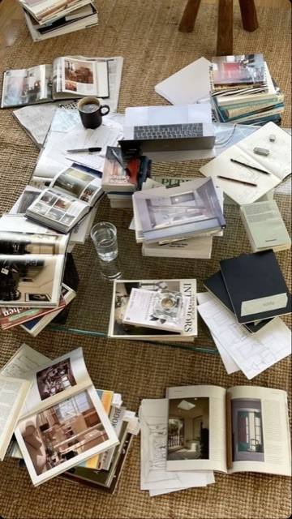
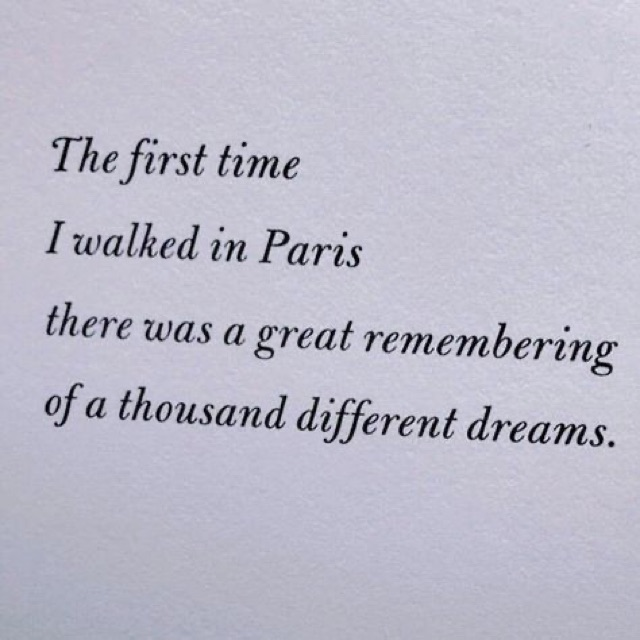

самое главное — понять, о чём ты ведёшь блог. я выбрала тему, которая мне интересна, — маркетинг — и вокруг неё всё раскручивала.
очень многих в ведении блога стопорит то, что они не знают, о чём говорить и что снимать. о работе говорить не хочется, поэтому сохраняешь тысячу и одну идею — и в итоге ничего не снимаешь.
при этом вести блог совсем не значит рассказывать всё о своей жизни или о своей работе. есть куда более важные вещи, за которые тебя узнают, запоминают среди тысячи одинаковых аккаунтов и выбирают.
сильный личный бренд — это на 80% та тема, о которой ты готова говорить часами. то, о чём ты бесконечно рассуждаешь, с чем люди идут именно к тебе. оставшиеся 20% — твои якоря: стиль, ритуалы, образ жизни, вкусы.
мой рилс, 04.06.2026
если кажется, что в голове каша и ты «обо всём», — у каждого есть ядро личного бренда, вокруг которого складываются все сюжетные линии блога. чтобы его найти, ответь себе на вопрос: о чём ты могла бы говорить часами, даже если бы тебе за это не платили?


выпиши
три вектора, о которых ты готова говорить
они не обязательно должны быть связаны с работой. подсказка: зачем к тебе приходят друзья и чем ты их вдохновляешь?
ответы сохраняются только у тебя в браузере.